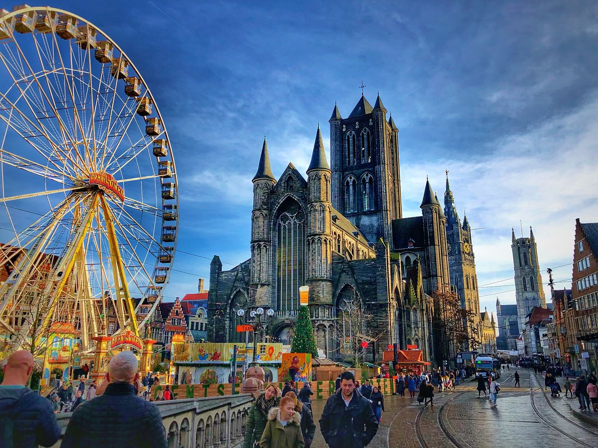
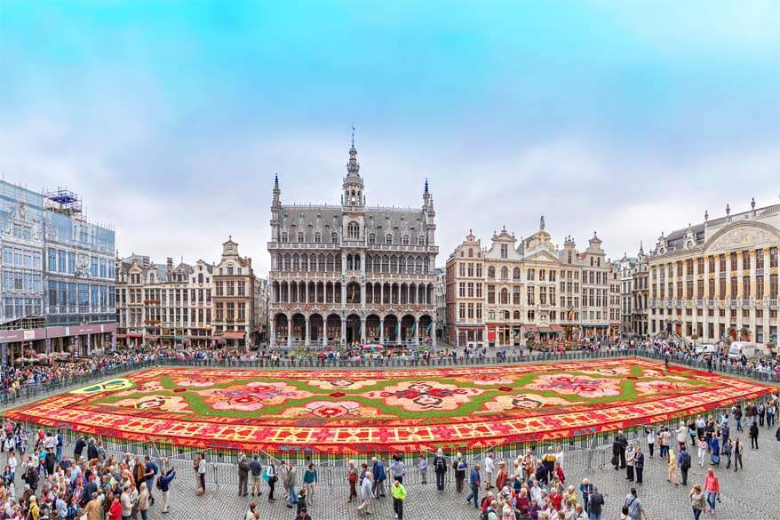
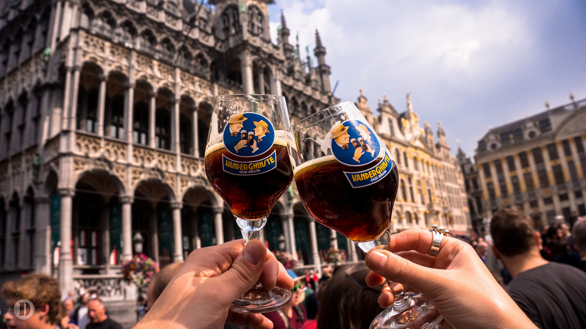
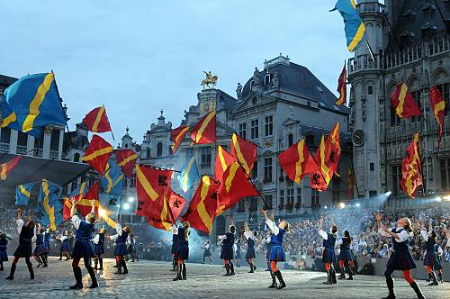

They value privacy, enjoy a safe and comfortable life, work hard, and are self-disciplined. Belgians tend to be very involved in their communities and government. They can be reserved around new people but once they get to know someone, they are warm and friendly. Family life is very important in Belgian culture.
The Flower Carpet is 70 m long by 24 m wide. 1,680 m² of begonias, dahlias, grass and bark. A hundred volunteers assemble the carpet in less than six hours. The first Flower Carpet of Brussels was created in 1971 and has been a showstopper every two years on the Grand-Place since 1986.
Every other summer, on the weekend of August 15th, the Flower Carpet offers a chance to stroll across the Grand-Place, a jewel of Gothic architecture, to inhale the fragrant scent of the flowers and admire its details. This extraordinary spectacle is made complete by a visit to the balcony of the Town Hall, which offers a wide-angle view of the work. Every evening, you can enjoy a magnificent sound-and-light show at the Grand-Place.
There's no doubt that beer festivals and beer related events are mushrooming across Belgium. Just like music festivals, they seem to be sprouting up here, there and everywhere over recent years. Check any page of the calendar, and you can almost guarantee there'll be some kind of beer festival being held somewhere in the nation.
the smaller festivals often want to provide a podium for the smaller players in the market, to show off their wares. They provide an opportunity to meet inspired micro-brewers – and to be inspired by their creations.
Then there are the established beer festivals, where medium-sized and large brewers showcase their latest and greatest products. Even at the larger festivals, though, you'll have the chance to taste something exclusive. Brewers often take the opportunity to present a new brew, being ever keen to have it taste-tested at the same time.
Finally, you may stumble across niche festivals, such as the Kerstbierfestival in Essen, which are a great opportunity to delve into the lesser-known pleasures of speciality beers. The Kerstbierfestival, for example, is reputed to have the widest range available of Christmas and winter beers.
Ommegang of Brussels, an annual historical procession and popular festival takes place annually over two evenings in July in the historic centre of Brussels. The celebration begins with a crossbow competition and a ceremony in Sablon Church. In the surrounding streets, various groups form a large procession.
The procession follows a 1.5 km route through the city to the Grand-Place, where the groups join the Magistrate of Brussels and bearers of various forms of living heritage.
Having originated as a religious event in 1348, the tradition declined in the 18th century and the modern Ommegang was then recreated in 1928-1930 based on descriptions of the procession Charles V attended in 1549. Nowadays, the tradition has evolved into a festive, local heritage event. Among the participants are various groups of volunteers who meet and prepare their roles together, encouraging younger members to get involved. These groups have become club associations which, during the Ommegang in early July, meet and socialize with other groups.
